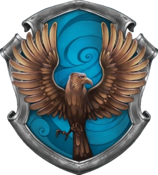

Bem-vindo ao Mundo Mágico de Harry Potter
Sobre Harry Potter
Junte-se a nós em uma jornada através do universo encantado de Harry Potter, criado pela brilhante autora J.K. Rowling. Desde a primeira página de "Harry Potter e a Pedra Filosofal", somos transportados para um mundo repleto de magia, amizade e aventuras inesquecíveis. A história segue o jovem bruxo Harry Potter, que descobre seu legado mágico ao completar 11 anos. Ele ingressa na renomada Escola de Magia e Bruxaria de Hogwarts, onde vivencia desafios, faz amigos leais e enfrenta o malévolo Lord Voldemort. Ao longo de sete livros emocionantes, somos levados a explorar os corredores de Hogwarts, a desvendar segredos antigos e a enfrentar criaturas mágicas extraordinárias. Cada página nos lembra da importância do amor, coragem e lealdade na batalha entre o bem e o mal. Em nossa página, celebramos esse universo mágico e convidamos você a se perder nas páginas dos livros, a reviver os momentos marcantes dos filmes e a descobrir curiosidades fascinantes sobre o mundo de Harry Potter. Junte-se a nós e deixe a magia começar!
Personagens Principais

Harry Potter é o famoso bruxo que sobreviveu ao ataque de Lord Voldemort quando bebê. Ele cresce em um ambiente não mágico antes de descobrir sua herança e ser aceito em Hogwarts. Com uma cicatriz em forma de raio na testa, Harry é conhecido por sua coragem e determinação na luta contra as forças das trevas.
Hermione Granger é uma aluna excepcionalmente inteligente e estudiosa em Hogwarts. Ela é conhecida por sua dedicação aos estudos e seu papel vital no grupo. Sua busca pelo conhecimento e sua habilidade de resolver problemas a tornam uma bruxa notável. Sua coragem e compaixão a tornam uma amiga leal.
Ron Weasley é o melhor amigo de Harry e um membro da leal família Weasley. Ele traz um senso de humor descontraído para o trio e é conhecido por sua coragem, apesar de frequentemente se sentir na sombra dos irmãos mais velhos. Ron é um companheiro leal e está sempre ao lado de Harry em suas aventuras.
Casas de Hogwarts

GrifinóriaOs membros da Grifinória são conhecidos por sua coragem e determinação. |

SonserinaOs membros da Sonserina valorizam a ambição e a astúcia. |

CorvinalOs membros da Corvinal são reconhecidos pela inteligência e sabedoria. |

Lufa-LufaOs membros da Lufa-Lufa valorizam a lealdade e a bondade. |
Magias e Feitiços Famosos
-
Expelliarmus
Expelliarmus é um feitiço de desarmamento que desarma o oponente, fazendo com que eles soltem o objeto que estão segurando. É conhecido por sua utilidade e por ser um feitiço usado em situações de confronto.
-
Alohomora
Alohomora é um feitiço de destrancamento usado para abrir portas trancadas. É um dos primeiros feitiços que os estudantes de Hogwarts aprendem e é conhecido por sua simplicidade e eficácia.
-
Expecto Patronum
Expecto Patronum é um feitiço usado para conjurar um Patrono, uma forma de energia positiva que repele os Dementadores. É um dos feitiços mais avançados e requer uma grande força de vontade e positividade do conjurador.
Animais Fantásticos
Hipogrifo
O Hipogrifo é uma criatura mágica majestosa com a cabeça de uma águia e o corpo de um cavalo. São conhecidos por sua nobreza e lealdade aos que os tratam com respeito. O Hipogrifo é uma das criaturas mais notáveis do mundo mágico.